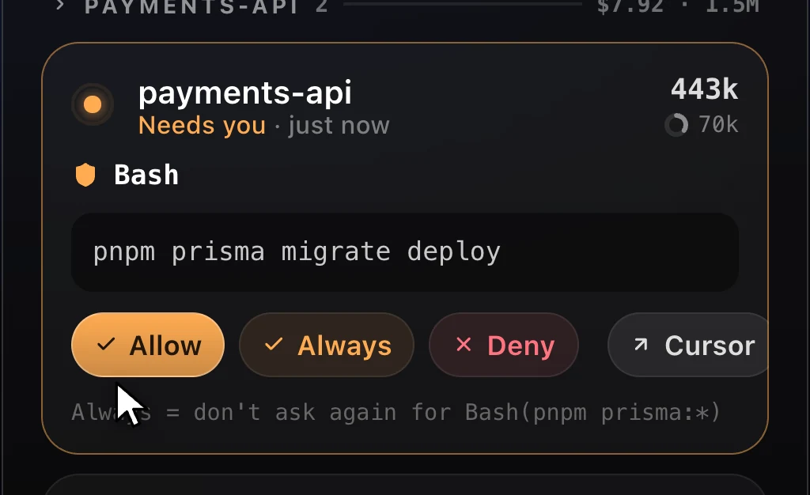
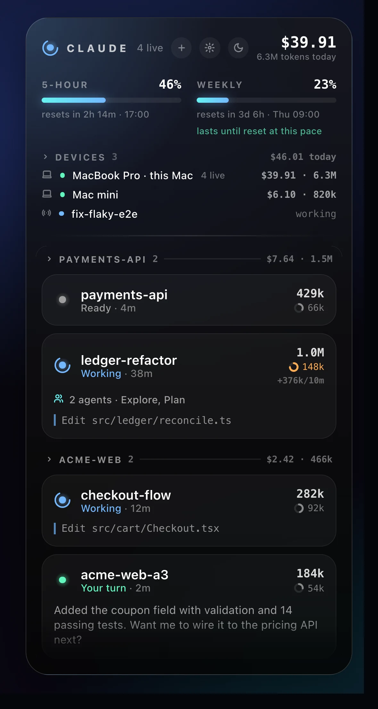
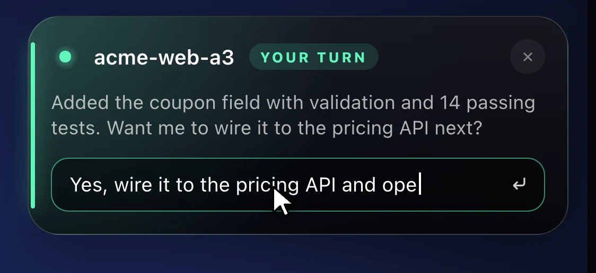
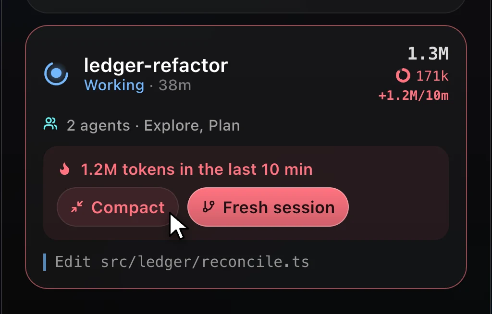
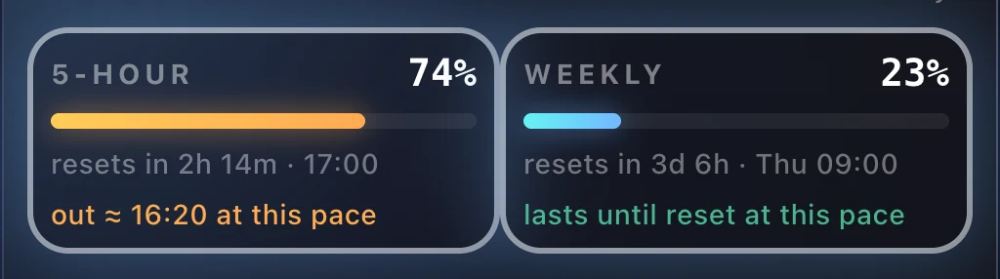

Permissions
Answer prompts from the HUD
Allow, Always or Deny and Claude carries on. Questions with options show up as buttons you can tick, with a typed answer when none fits.

A native heads-up display for every Claude Code session: what each one is doing, what it costs, how close you are to your limits, and which one needs you next.
$brew install --cask louayzouaoui1/claude-hud/claude-hud


It sits at the edge of your screen, out of the way, and speaks up only when a session needs you.
Allow, Always or Deny and Claude carries on. Questions with options show up as buttons you can tick, with a typed answer when none fits.

A session burning tokens fast gets flagged. Compact it, or start a fresh one in the same workspace with a handoff note built from the old transcript.

Reset countdowns, and whether your pace will last until the reset. Usage from other devices counts too.

When Claude finishes, a toast slides in. Type a reply and it lands in that session. Payment and access errors alert you too.
Two platforms, one project. Both builds are published automatically from the repository on every release.
brew install --cask louayzouaoui1/claude-hud/claude-hud
Download for macOSUniversal · Apple silicon + Intel
Claude HUD works with Claude Code in Cursor, VS Code, and any terminal. It reads local session data through Claude Code's own hooks.